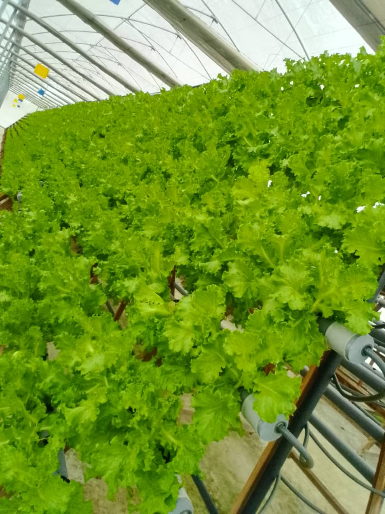

Proyectos reales · Sin renders
Esto ya está creciendo.

Fresa de medianías
Instalación NFT en exterior aprovechando la altitud y humedad del norte de Gran Canaria. Fresa de calidad de montaña con consumo de agua mínimo.

Hoja verde y tomate a escala
500 m² de NFT bajo invernadero produciendo lechuga y tomate en continuo. La prueba de que el modelo escala y es rentable en Canarias.